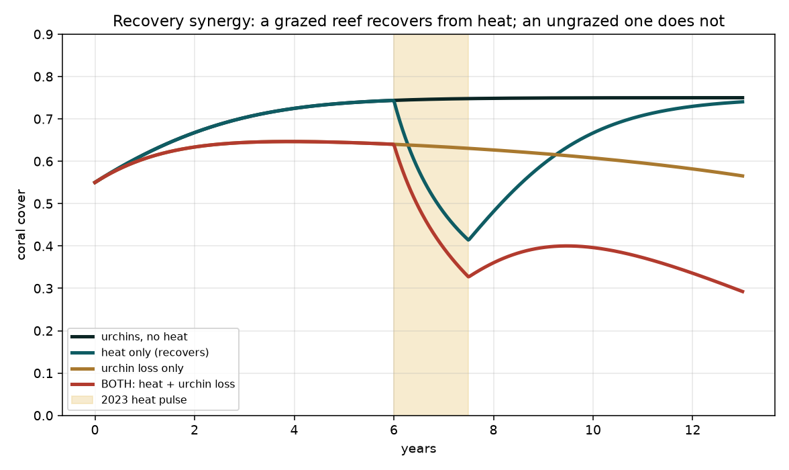

We rebuilt Banco Capiro's situation from first principles, established physics, chemistry and ecology applied to real satellite and ocean-model data, rather than assuming an answer. Six models. Every term is defined in the glossary; every claim is cited below. New to this? Each section has an In plain terms box.
Terms used throughout: SST (sea-surface temperature), DHW (Degree Heating Weeks, accumulated heat stress; >4 = bleaching likely, >8 = severe with mortality)8, Kd490 (how fast light dims with depth = water clarity), Ωarag (aragonite saturation, how easily coral builds skeleton). All defined in the glossary.
The dying reefs 30-60 km away sit in the same regional ocean as Banco Capiro. So we treated the region as a natural experiment: if the healthy reef and the sick reefs share the same water temperature, the thing that saves it must be local. Each model tests one candidate.
Question: healthy reefs need grazers to keep seaweed (macroalgae) off the coral. Banco Capiro has low reef-fish biomass. So why hasn't seaweed taken over?
dC/dt = rTC − dC − aMC, dM/dt = aMC − gM/(M+T) + γMT,
with grazing g = g_fish + g_urchin. We found the grazing tipping point and tested where Banco Capiro
lands with vs without its urchins.
Result: the system is bistable with a collapse threshold near g ≈ 0.19. Low
fish grazing alone falls below it → the model flips the reef to seaweed. Restore the measured
Diadema urchin grazing (this reef held them at ~155 per 100 m² in 2014, vs 2.5 at degraded Utila15)
→ stable high-coral state. Remove the urchins in a counterfactual → collapse.
Then the counterfactual happened in the field. A Caribbean-wide pathogen16 crashed Banco Capiro's Diadema ~88% in 2022, and by the next survey macroalgae had risen ~193% and hard coral fallen ~31%15. This real loss of grazing followed by coral decline is strong field evidence that herbivory was holding the reef together, and the reason its status is now "high but declining," not "thriving." Our model is calibrated to this sequence, not independently validated by it: with only two time points it cannot yet be a formal attribution (see the honest-limits note below).
Seaweed and coral compete. Something has to mow the seaweed. Fish usually do it; here the fish are scarce, but a huge population of spiny sea urchins does the mowing instead. Take the urchins away and the model says the reef would drown in seaweed.
Question: is Banco Capiro simply cooler, or less heat-stressed, than its neighbors?
Result: Banco Capiro's temperature closely tracks the degrading reefs (Maximum Monthly Mean 29.65 °C vs 29.45-29.54 °C; near-identical seasonal swing; this is a descriptive comparison, not a formal test). So it is not a cool refuge: for the decade it was exceptionally healthy, it sat in the same regional heat as its declining neighbours, and it reached DHW ≈ 14 in 2023.10 Temperature alone does not explain why it was healthy. (In 2023, after the urchin loss, the central bank did suffer mass mortality, which the vulnerability analysis below addresses.)
It didn't get lucky with cooler water. It felt the same brutal heat as the reefs that are dying, a dose strong enough to kill most reefs, and lived anyway. That's the core of the mystery, and it points the finger at something local, not the weather.
Question: how different is Banco Capiro's water, measurably?
Kd490 (water clarity) and
chlorophyll-a (plankton / nutrient proxy), via NOAA CoastWatch ERDDAP. Compared Tela reefs to
the clear-water reefs.
Result: Banco Capiro is 2.5× more turbid and 4.2× more chlorophyll-rich than the clear reefs (Cocalito 2.8× / 5.2×). The "murky, nutrient-loaded bay" is real and quantified. This reframes the pollution as a possible asset, not just a threat.14
Satellites confirm the bay is genuinely dirtier and greener than the pretty reefs nearby. Normally that's bad news. Here it may be doing two useful things at once, shading the coral and feeding it (next two sections).
Question: can the murk shade the coral enough to blunt the heat stress?
light(z) = light₀·e^(−Kd·z)) we compared light reaching the
coral at Banco Capiro vs a clear reef, and formed a light-weighted effective heat dose.
Result: at the measured clarity, chronic murk gives the deep bank partial relief; the strongest shading is episodic, during floods and resuspension, exactly when heat peaks. Shallow corals get the least shade, so they must lean on other mechanisms.
Sunburn needs sun. Cloudy water is like sunscreen for coral, it removes the "light" half of heat-plus-light bleaching. It protects the deeper coral best, and works hardest during muddy floods, which is lucky timing. It doesn't fully cover the shallow coral, which is why the "tougher algae" idea still matters.
Question: do the river and sewage help or harm the reef's ability to grow?
Ω_arag responds, high if the river is limestone/karst-fed (alkalinity subsidy), low if eutrophic runoff dominates14.
Result: a limestone-fed river keeps Ω_arag ≈ 4 (good for building skeleton) even with
dilution; eutrophic runoff drags it down. The deciding measurement is the river's alkalinity : DIC ratio, a field ask for the expedition.
These corals can eat the plankton the pollution grows, so nutrients that starve-then-kill a clean reef may feed this one. And if the muddy river carries dissolved limestone, it hands the coral the raw material to build skeleton. Whether that's true here is a bottle of water away from an answer.
Question: do currents steer the river's mud away from the reef, or does cool deep water well up to protect it?
Result: the plume is not diverted, ~53% of particles reach the reef, but they flush through in ~4 days (short residence). And there is no cool subsurface pool or upwelling; the coast is downwelling-favorable. Honest limit: at 1/12° (~8 km) the bay is only ~2-3 cells, so this captures regional transport, not fine sub-bay flow.
Two tempting explanations both failed: the mud isn't steered around the reef (it arrives, but washes through fast, so the reef gets shade without being buried), and there's no hidden cold current. Ruling things out is how you find the real answer.
| Ruled out | Why |
|---|---|
| It's cooler here | Same regional SST as the degrading reefs; hit DHW 14 in 2023 and lived (§2) |
| Currents divert the river | Plume reaches the reef but flushes in ~4 days, shade without smothering (§6) |
| Deep upwelling cools it | No cool subsurface pool; coast is downwelling-favorable (§6) |
Three physical escapes gone. What remains is local biology and optics, shading, feeding, grazing, and likely a heat-tolerant symbiont6,7, the one piece needing genetics. That's what the expedition measures.
Being honest about prior work is part of the method. The individual mechanisms here are not new discoveries, they are established in the turbid- and marginal-reef literature17: turbidity shading3,4, heterotrophic feeding5, heat-tolerant symbionts6,7, and herbivory1. And the turbidity-as-refuge idea is actively contested: on Atlantic marginal reefs, when a heatwave coincided with a drop in turbidity, 91% of colonies bleached18. Nor is Banco Capiro unique, Cordelia Bank off Roatán carries even higher cover.
So what would move the science forward is not "we found why it's healthy." It is three things this work can uniquely offer:
| Contribution | Why it's new for this reef |
|---|---|
| Integrated multi-driver attribution | A single quantitative budget combining optics + thermal + hydrodynamics + carbonate + herbivory, validated against the 2014-2022 time series. No one has integrated the drivers for Banco Capiro. |
| Physical ruling-out | Same regional SST, no upwelling, and a river plume that reaches the reef but flushes in ~4 days, new physical characterization of the bay (satellite + ocean model). |
| Predictive vulnerability | Combining the herbivory collapse with turbidity-dependence and heat to predict when the reef is at risk (heatwave + clear-water spell + urchin loss). Forward-looking and management-relevant. |
Turning this into a peer-reviewed contribution needs in-situ validation from the expedition and collaboration with the teams that hold the long-term data (Operation Wallacea) and the symbiont work. See Data & Researchers.
We ran a hostile internal review of the first version of this model. It found that the original "same heat, opposite fate" result was an artifact of hand-picked parameters, so we rebuilt the test properly: a controlled 2×2 factorial from a common baseline (toggle urchins, toggle the 2023 heat, one factor at a time), a Monte Carlo over the uncertain parameters, keeping only parameter sets consistent with the reef being healthy in 2014. The full review and the code are public in the repository.
The result is more honest and more interesting. The acute claim, that losing urchins makes the heat kill more coral outright, did not survive. But the recovery effect did: a reef that still has its grazers bleaches and then recovers, while a reef that has lost them gets overgrown by seaweed in the space the heat opened, and keeps declining. This is the classic grazing-enables-recovery mechanism, robust for reefs near their tipping point (a synergy in 98% of those parameter sets).

So the defensible claim is narrow and testable: if Banco Capiro sat near its herbivory tipping point, the 2022 urchin loss removed its ability to recover from the 2023 heat. How close it was is exactly what the expedition and the full Operation Wallacea time series can settle. Magnitudes are not yet fitted to data. What is solid regardless: the herbivory mechanism (from the field data), the not-a-cool-refuge result, and the satellite optics.
Most diagnostic. If shallow corals bleach more than deep in heat, turbidity shading is confirmed. Log light at 3/10/20 m at Banco Capiro and a clear reference reef.
The one mechanism we can't compute. Tissue punches for Symbiodiniaceae typing, is heat-tolerant Durusdinium dominant? Coordinate with a coral-symbiont lab.
Turns the grazing model into a number. Count Diadema per m² and herbivorous fish on fixed transects.
Decides whether pollution helps or harms. Alkalinity, DIC, nutrients, Ωarag. Key number: the river's alkalinity : DIC ratio.
Satellites miss daily/tidal swings. Loggers at bank crest and base catch high-frequency variability2 and any cool pulses.
This is a pre-expedition modeling draft (v1), not yet peer-reviewed. Citations support the mechanisms tested; site-specific claims will be validated by the field measurements above. The full grouped bibliography is on the References page; methods, code and data are on Data & Researchers.